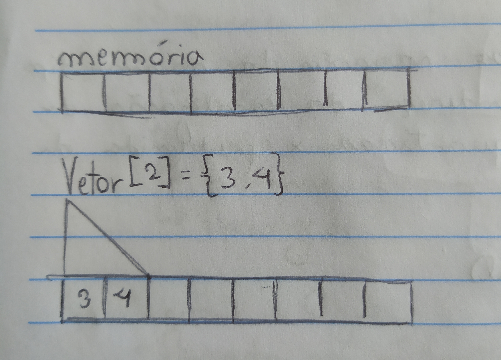
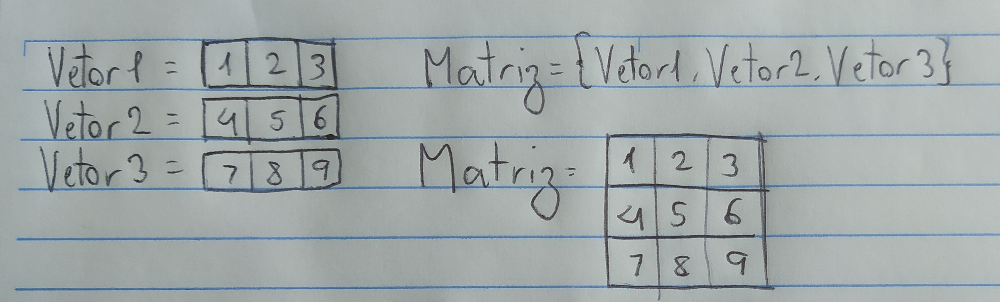
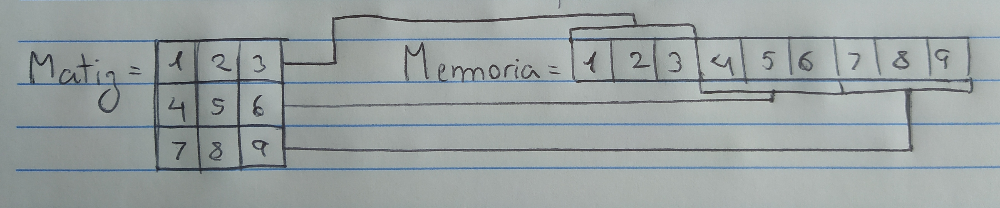

Vetores e matrizes
O que são vetores
Vetores são estruturas de dados simples, ele armazena diversas variáveis do mesmo tipo.
Para armazenar o vetor na memória, o computador primeiro separa um espaço da memória, em seguida atribui o valor de cada elemento para esse espaço, os valores são salvos consecutivamente e em ordem na memória.
Exemplo em Portugol:
programa {
funcao inicio() {
inteiro vetor[3] = {13, 45, 56}
// Vetor tem 3 valores
// Vetor[0] == 13
// Vetor[1] == 45
// Vetor[2] == 56
escreva (vetor[2])
}
}
O que são matrizes
Matrizes são “vetores de vetores”, ou seja, quando existem vários vetores do mesmo tipo, podem ser armazenados em um vetor também.
O computado armazena cada valor de cada vetor e cada vetor consecutivamente, pois sua memória é linear.
Segue um exemplo em Portugal:
programa {
funcao inicio() {
inteiro matriz[3][3] = {{1, 2, 3}, {4, 5, 6}, {7, 8, 9}}
// A matriz tem 3 vetores, e cada vetor tem 3 valores
// Para referenciar um valor, primeiro é necessário referenciar o vetor
// Por exemplo, o número 6, ele está no segundo vetor, na terceira posição
escreva (matriz[1][2])
}
}
Algo interessante que achei quando fui pesquisar mais a fundo foi a forma que o computador usa para referenciar elementos.
Por exemplo, em uma Matriz de 100 arrays, cada um com 100 elementos, começando no número 1 e cada valor cresce 1 unidade até terminar no número 10 000, Como o computador encontraria o valor de Matriz[14][67]?
Matriz[100][100] = {{1, 2, 3, ... 100}, {101. 102, ... 200}, ... {..., 10 000}}
Matriz[14][67] = ?
Ele primeiro encontra o endereço do primeiro elemento, depois soma esse valor com a primeira coordenada, multiplicada pelo número de colunas, passando assim por todos os elementos das linhas anteriores, depois ele soma com a segunda coordenada.
Matriz[0][0] + linha*(Qnt colunas) + coluna
Assim o valor de Matriz[14][67] é:
Matriz[0][0] + 14*100 + 67
1 + 1400 + 67
1468